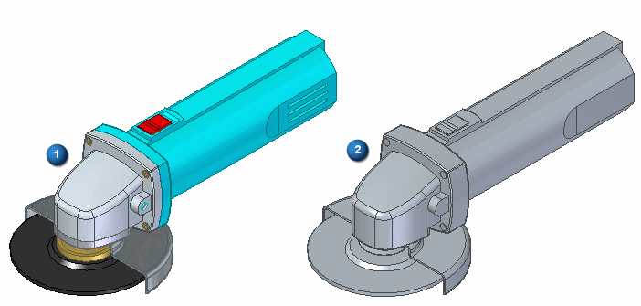

Auto-Simplify command
Use the Auto-Simplify command to create a single design body of selected assembly components in the Simplify Assembly environment.
The single design body can be used in a higher assembly to improve performance in large assemblies. The internal features can be removed with the Remove Features option.
To use the single body, save the body as a standalone part using the Save As command on the context menu of the Simplified Assembly entry in Assembly PathFinder.

(1) selected asembly, (2) one body result with internal voids removed
-
Creating a single design body simplifies the assembly representation. The intellectual property information is hidden when providing it to a vendor as a reference model in the assembly.
-
A single design body can be used for large assemblies received from a supplier. You can create a geometry representation and use in a higher level assembly without unnecessary details.
-
To improve a large assembly performance, a single design body can be used as a simplified version of large subassemblies in a higher level assembly.
Invalid assembly bodies or part bodies are not accepted for simplification.
How do I
Edit an Auto-Simplify definitionCreate a single body using Auto-Simplify
Use the simplified version of a part in an assembly
Use the designed version of a part in an assembly
Create a simplified version of an assembly
Save a simplified assembly as a part
Controlling simplified assemblies
Learn more
Simplifying partsSimplifying assemblies
Simplified assemblies best practices
Look up more details
Auto-Simplify command barCreate Simplified Assembly using the Visible Faces command
Create Simplified Assembly using the Model command
Enclosure command
Duplicate Body command
Simplify Assembly command
Save Simplified As command
Use Simplified Parts command
Use Simplified Assemblies command
Simplify Model command
Update Simplified Assembly command
Save Simplified Assembly As dialog box
Simplified Assembly Visible Faces Options dialog box
Design Assembly command
Use Designed Assembly command
Use Designed Part command
Design Model command
Create Simplified Assembly Visible Faces command bar
Create Simplified Assembly Model command bar